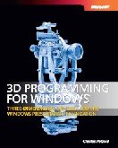

PETZOLD BOOK BLOG
| Recent Entries | ||
| < Previous | Browse the Archives | Next > |
| Subscribe to the RSS Feed |
August 13, 2007
Roscoe, N.Y.
Suppose you wanted to use WPF 3D to create a dodecahedron. A regular dodecahedron has 12 faces, each of which is a pentagon. A handy source of the three-dimensional coordinates is this Wikipedia article. One easy approach is to break each pentagonal face into five triangles that meet at the center. Implementing it, you might come up with something like this XAML file from Chapter 3 of my new book 3D Programming for Windows:
There's nothing really wrong about doing it this way. In fact, you can even define a TextureCoordinates collection and apply a non-solid brush, as in this XAML file from Chapter 5:
RotatingDodecahedronWithRadialBrush.xaml
However, if you wanted to shine a PointLight or a SpotLight on this figure, you're in bad shape. The illumination of a triangle from a PointLight or SpotLight is based on an interpolation over the surface of the triangle governed by the illumination at the vertices. To get it to work right, those triangles defining the surface of the dodecahedron need to be divided into much tinier triangles.
If you look at the class hierarchy in this recent blog entry showing some of the classes defined in the Petzold.Media3D library available here, you'll see an abstract class named FlatSurfaceMeshBase, from which a generalized PolygonMesh class derives and also classes for regular polyhedra. FlatSurfaceMeshBase defines a public property named Slices with a default value of 1, and a protected method named TriangleSubdivide that divides large triangles created by the derived classes into much smaller triangles. This little method allows the polygons and polyhedra to be used with PointLight and SpotLight.
Here's a XAML file that displays a DodecahedronMesh figure with a Slices value of 32. Two SpotLight objects sweep back and forth across its surface:
You can't run this XAML file in the browser. However, you can download it and run it in XamlCruncher 2.0 if you've loaded at least version 0.9.1.0 of the Petzold.Media3D library. Or you can see what it looks by running this XBAP:
The XBAP was basically constructed from the SpotlightedDodecahedron.xaml file with an application definition file, and a reference to version 0.9.1.0 or Petzold.Media.dll.
|  | Buy my book and we'll both be happy! | ||
| Amazon.com | BookSense.com | quantumbooks | |
| Barnes & Noble | Amazon Canada | Amazon UK | |
| Amazon Français | Amazon Deutsch | Amazon Japan | |
| Recent Entries | ||
| < Previous | Browse the Archives | Next > |
| Subscribe to the RSS Feed |
(c) Copyright Charles Petzold
www.charlespetzold.com
Submit comment:
NOTE: Comments are examined personally and generally are posted within 12 hours.